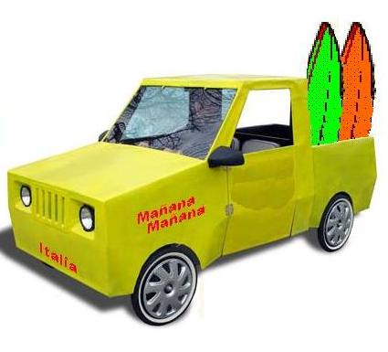
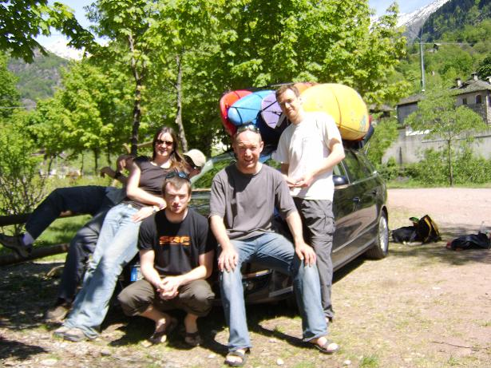
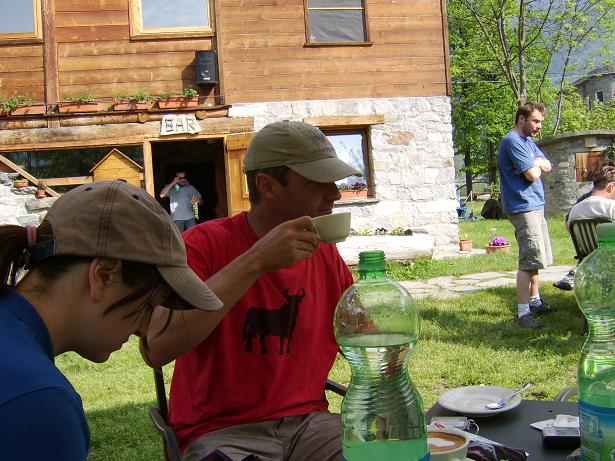
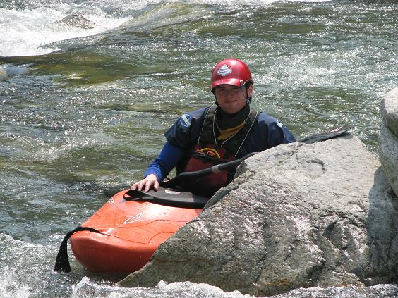
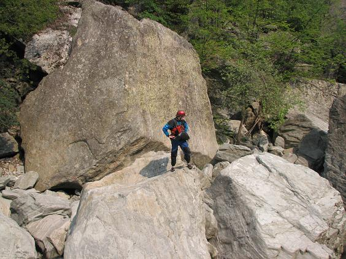
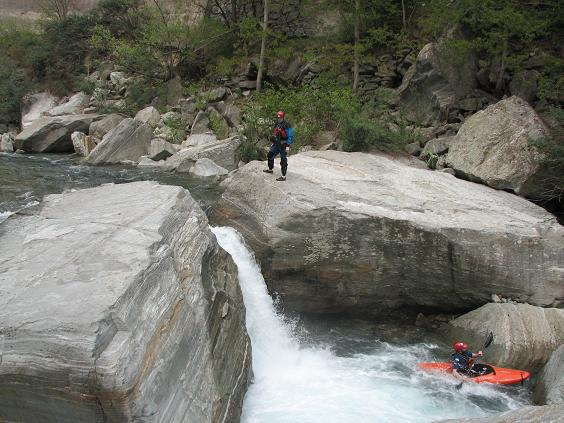
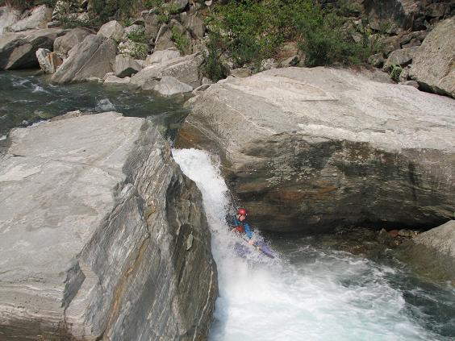
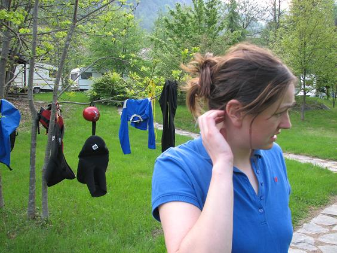

First Day - Sesia from the Campertogno Campsite
L’indecisione è la chiave della flessibilità
|
|
|
First Day - Sesia from the Campertogno Campsite |
||
|---|---|---|---|---|
|
L’indecisione è la chiave della flessibilità
|
First Day - Sesia from the Campertogno Campsite
With applications flooding in from all over the world requesting a visit from the Manana Manana crew, we decided that Italy was the next country that needed our travelling seminar on How to Save Kayaking.
The lemony lime comedy car, while very little, was deemed too large for Ryanair, so we left it behind as we flew out from Dublin to Milan.

The team this time was a mix of regulars and, er, irregulars...

Catherine, Mick 'El Diablo' Moore (in the baseball cap), Young Tom, Der Commandente, The Real Jim Kennedy. Catherine really has it easy, with just one name. Not only does she not have any kind of kayaking nom de guerre, she doesn't even have a middle name.
Anyway, most of these people will be familiar to our long-term readership (hi mam!). Mick has been in a semi-retirement for a few years, but got a kitchen pass for this trip on about a week's notice. Mick and Jim have been paddling together for years, notably in Costa Rica back in the day, when the Internet was known as email.

Young Tom is another graduate of the UCD Kayaking School of Excellence. His stated ambition is one day to receive the Mick Moore Lifetime Achievement Award. If you were in Norway last year you may know Young Tom as Random Tom.

Our base for the trip was the campsite at Camertogno most of the way up the Sesia valley in the Italian Alps, near the Swiss border. The Sesia is the main river in the area, providing much of the fun with sections of river to suit all tastes. There are a number of tributaries feeding into the Sesia at various points along the valley adding to the variety in steepness and grades available. Logistically, once you get to Campertongo (difficult but not impossible with only those crappy freebie Europcar handout A4 maps) it is a fairly simple trip to coordinate.
With Tom already on the water, the put-in for our first foray in Italian waters was from the campsite at Campertogno. The first rapid of any significance is just below the road bridge signposted for 'Quare' - there's a Brendan Behan joke in there somewhere...
Anyway, as Jim looks for the drop marked on the map as 'unnavigable' - it's around here somewhere...

Oh yes, there it is - as probed by Tom down the middle line (off-camera - shoddy camera work, whoever took this picture).

So to check that this is indeed unnavigable, Jim probes the left line.

Turns out it's not unnavigable, but there's a story in the guidebook about some German dude who... oh never mind, there's a story in every guidebook about some German dude who...
It's always important to check out the veracity of the locally-available information, be it maps or guidebooks, early in a trip. They are almost always suspect, and the trick is to figure out how off target they are and more importantly, in which direction. Guidebooks tend to be written by conservative types and overstate the difficulty - guides to Corsica seem to be the worst in this regard.
Later, back at the campsite, Catherine ponders just how much waffle is there going to be in this trip report?
